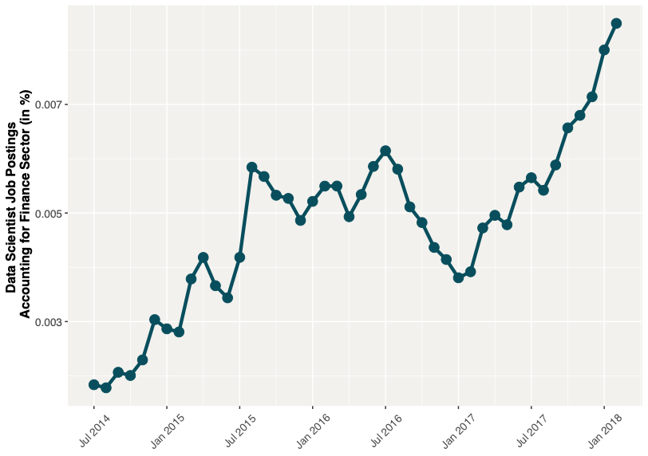
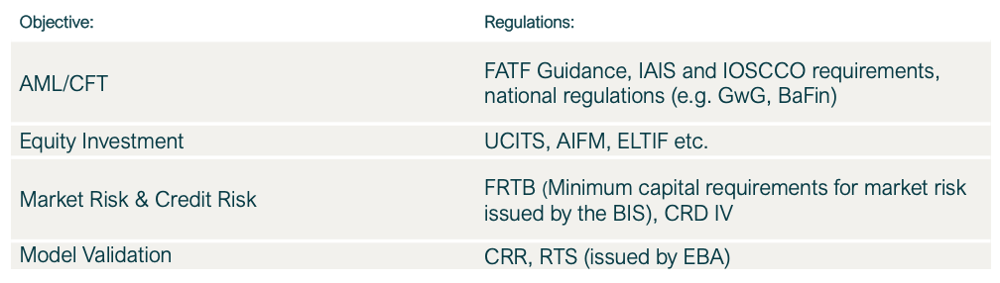
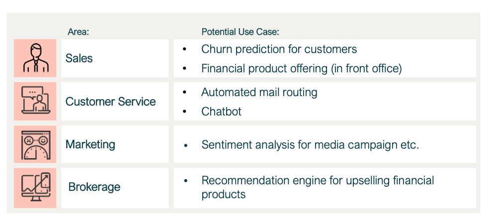

3rd of November 2020 · Data Science
Efficient implementation of AI in a bank's value chain using AWS
Why banks hire their own data scientists
A financial institution's AI investment still requires human intervention; namely, from data scientists. This data science knowledge can be sourced through intensive recruitment procedures, or from engaging consultancies.
Over the last six years, the demand for data scientists has been increasing across all industries. The financial sector, including banks are no exception. Since 2017 there has been a substantial increase in demand of data scientists in finance (according to data from Indeed.com and U.S. Bureau of Labor Statistics).
That the banking sector's increase in investment in data scientists is justified for very specific use cases. However, it seems to be more efficient in other areas to outsource entire AI solutions to developers. In the majority of AI use cases, the contribution of external experts is invaluable.

Naturally, banks are heavily regulated, and these regulations also affect AI solutions. This can make the fast adoption of AI challenging.
Anti-Money Laundering (AML), equity investment and risk management, for example, are areas that would otherwise be prime candidates for the use of AI, however, they are subject to strict regulations, for example from the far-reaching Basel III regulations and their resulting national and international legislations. Table 1 shows just a small summary of these areas and their corresponding guidelines and regulations.

Banks typically attempt to hire data scientists with experience in highly regulated fields. The combination of domain knowledge and data science skills often proves to be the key to success in generating business value. It is essential that models are aligned with legal requirements in order to remain compliant. An excellent model, in the sense of selected performance metrics, could be deemed worthless if it is not compliant with, for example, CRD IV, which is an EU legislative package. It is, therefore, reasonable to suggest that, where knowledge of regulations has a high impact on a model's development, it is advisable for such models to be developed in-house by data scientists with domain expertise.
Which use cases are implemented by AWS Partners?
In my experience, a significant number of use cases are not limited by regulations applied to the financial sector. In these cases, the restrictions are mainly due to the processing of data within the cloud. Crayon's cloud consulting services e.g. offer the exact answer to these questions. Finding, implementing and maintaining solutions for such use cases is well within the capabilities of AI development companies. A large number of AI use cases would not require overwhelming coordination with subject matter experts due to the broader nature of the problem and the solution.
Figure 2 gives an overview of such use cases that have seen been developed for clients. These cases are good opportunities for an organization to get a quick start on AI. This is the central reason why it is simply more efficient in many cases to call in a partner when implementing AI solutions.

Efficiency
AWS offers a high-quality set of tools that enables external experts to provide solutions for the client quickly and efficiently. There are 165 services, of which 22 alone are allotted to computation and storage. This variety offers AI development companies the possibility of remotely building an infrastructure baseline in a short period of time.
After having an infrastructure in place, the next level refers to the selection of ML models. Open source models and tools are a very powerful means of efficiently delivering state-of-the-art projects. If such models are not sufficient, data scientists will develop even more customised solutions using newly engineered algorithms. When selecting the right AI partner, it is important to ensure that this partner is well-trained and licensed by common cloud providers.